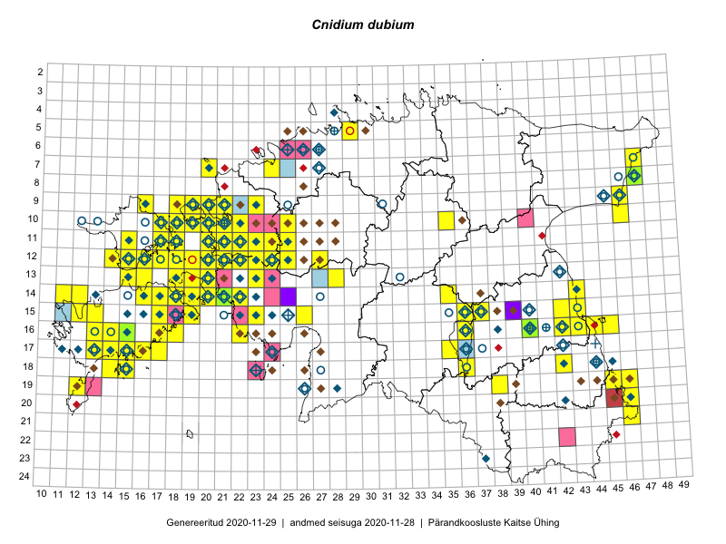

Cnidium dubium
Uuendatud: 2016-12-02
Kaardile koondatud taksonid: Cnidium dubium (Schkuhr) Thell.

Kaart põhineb 95 vaatlusel. Taksonit on leitud 63 ruudust.
Kuvatud viited 20 esimesele andmebaasikirjele, ülejäänud PlutoFis
- Thea Kull: 2015-07-07: 16-40: ala
- Peedu Saar, Toomas Kukk: 2015-05-28: 11-17: ala
- Peedu Saar, Toomas Kukk: 2015-05-27: 09-16: ala
- Peedu Saar, Toomas Kukk: 2015-05-26: 10-17: ala
- Ott Luuk: 2014-07-24: 12-20: ala
- Ott Luuk, Jaak-Albert Metsoja: 2015-05-27: 15-23: ala
- Tiit Hallikma, Toomas Kukk: 2015-08-27: 12-21: ala
- Ott Luuk, Elle Roosaluste, Jaak-Albert Metsoja: 2015-06-16: 18-15: ala
- Meeli Mesipuu, Kadri Tali: 2015-07-08: 14-17: ala
- Meeli Mesipuu: 2015-07-10: 14-16: ala
- Toomas Kukk, Thea Kull, Ott Luuk, Peedu Saar: 2014-06-27: 14-16: ala
- Meeli Mesipuu: 2015-07-11: 14-19: ala
- Meeli Mesipuu: 2015-07-13: 13-20: ala
- Meeli Mesipuu: 2015-07-09: 13-16: ala
- Meeli Mesipuu, Timo Luhamäe: 2015-07-21: 08-47: ala
- Toomas Kukk, Thea Kull: 2014-08-21: 10-22: ala
- Toomas Kukk, Thea Kull: 2014-08-21: 11-22: ala
- Indrek Tammekänd: 2015-04-06: 15-23: ala
- Peedu Saar: 2015-06-05: 16-42: ala
- Thea Kull, Eerik Leibak: 2015-07-21: 07-47: ala